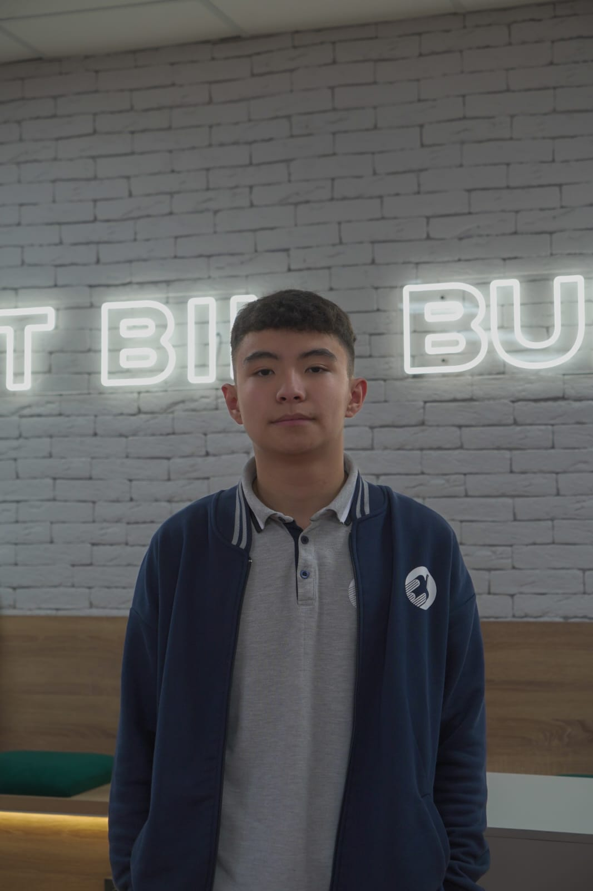

Жамбылов Мирас
Zhambylov Miras — "Vote for better live in BIL"
Небольшая страница-резюме, чтобы одноклассники и учителя узнали, кто я и какие у меня планы как у президента школы.
My goals as school president
- Development of a charity foundation
- Project competitions (startup, social project, etc.)
- Esports competitions (Brawl Stars, Clash Royale, Counter-Strike, Dota, FC Mobile, FC 25, UFC)
- Stand-up: every student can go on stage and perform humorous acts
- Open mic: every student can showcase their talent
- Development of the Olympiad field
- Inviting famous people to our school
- Dormitory league: football and basketball for boys, volleyball and table tennis for girls (together)
- KVN "League of the Cheerful and Resourceful": school competitions will be held (the best players will represent the school in regional competitions). Students themselves choose the host once every 1–2 weeks.
- Wall of Excellence (the best students are listed there)
- Honor Board (teachers and staff who have worked the longest at school)
- Thematic days
- Development of clubs
- From grades 7–8, helping students choose their future place of study and profession.